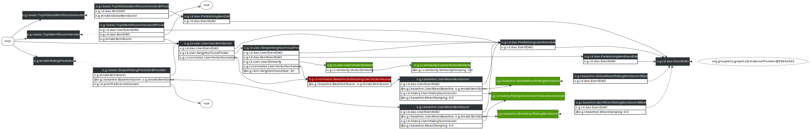

User-User Collaborative Filtering
LensKit provides an implementation of user-user collaborative filtering, the original automatic collaborative filtering algorithm [Resnick et al., 1994]. This code lives in the lenskit-knn module, under the org.grouplens.lenskit.knn.user package.
Quick Start
Configuring UserUserItemScorer as your ItemScorer implementation is the main thing to do to use user-user CF. There are, of course, other knobs you can tweak as well. This configuration will use a basic user-user collaborative filter with mean-centered cosine similarity and 30 neighbors:
bind ItemScorer to UserUserItemScorer
// use item-user mean when user-user fails
bind (BaselineScorer,ItemScorer) to UserMeanItemScorer
bind (UserMeanBaseline,ItemScorer) to ItemMeanRatingItemScorer
// normalize by subtracting the user's mean rating
within (UserVectorNormalizer) {
// for normalization, just center on user means
bind VectorNormalizer to MeanCenteringVectorNormalizer
}
set NeighborhoodSize to 30
Configuration Points
As with all LensKit algorithms, the user-user CF implementation is highly configurable to allow you to experiment with a wide variety of variants and configurations. This section describes the primary configuration points for customizing the default components that drive the user-user CF implementation.
Unlike most other algorithms, the user-user filter does not really have a model that is built (though some things such as the global mean rating used by baselines are computed at model build time)
Here are some of the additional configuration points (‘@’ indicates a parameter to be set with set rather than bind):
- UserVectorNormalizer — normalizes user rating vectors prior to similarity computation and prediction.
- NeighborhoodFinder — finds neighborhoods for scoring items. The default implementation is SimpleNeighborhoodFinder. Since LensKit 2.1, you can use
SnapshotNeighborhoodFinderto embed an optimized snapshot of the ratings data into the neighborhood finder to improve performance on medium-sized data sets. - UserSimilarity — compute similarities between users. The default implementation, [UserVectorSimilarity][], just compares the users’ vectors using a vector similarity function; the default vector similarity is CosineVectorSimilarity.
The normalizers used for prediction (where user ratings are normalized, predictions generated, and then the resulting predictions denormalized) and for comparing users can be configured separately using context-sensitive configuration. To change the normalization for similarity-finding and leave the predict normalization unchanged, you can do this:
within (NeighborhoodFinder) {
// use default normalizer, which uses a vector normalizer
bind UserVectorNormalizer to DefaultUserVectorNormalizer
// use the mean-variance normalizer
bind VectorNormalizer to MeanVarianceVectorNormalizer
}
Unless you use anchored matching (at instead of within), you need to override the neighborhood finder, not the item scorer, since the item scorer depends on the neighborhood finder.
Diagram
The components of the user-user algorithm are shown below:
